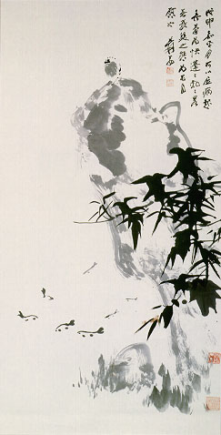

義助慰安婦 —— 李敖百件珍藏義賣藝術品（第19件） 品 名： A19. 張大千「竹石小鳥」 預估價： 160 萬 成交價： （保留） 說 明： 大名鼎鼎的張大千先生所畫，以單一的墨色運用深淺的變化，畫出可愛靈巧的竹石小鳥與魚兒，為一罕見、裱工亦佳的張大千作品。這幅畫在一九九○年曾在蘇富比拍賣會上，以折合台幣約七十七萬的價錢售出；七年後，在本次義賣中，以張大千的畫作行情，更是水漲船高了。 
大名鼎鼎的張大千先生所畫，以單一的墨色運用深淺的變化，畫出可愛靈巧的竹石小鳥與魚兒，為一罕見、裱工亦佳的張大千作品。這幅畫在一九九○年曾在蘇富比拍賣會上，以折合台幣約七十七萬的價錢售出；七年後，在本次義賣中，以張大千的畫作行情，更是水漲船高了。